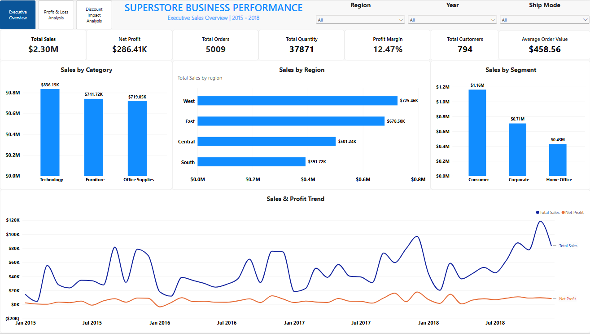

Mechanical engineer turned data analyst. I turn raw, messy business data into clean databases, structured spreadsheets, and interactive visual dashboards that drive decisions.
Interact directly with the commercial audit application built in Python and deployed on Streamlit Cloud.
Note: The application runs on Streamlit free hosting. If idle, it may take a few seconds to wake up.
End-to-end projects covering data extraction, data cleaning, automated pipelines, and interactive BI reporting.
Audited 9,994 retail transactions using a Python-to-Google Sheets pipeline and Power BI. Discovered that despite headline sales of $2.30M with a 12.47% net margin, $156.12K was lost across 1,318 orders due to excessive discounting.
| Discount Band | Sales | Profit Margin |
|---|---|---|
| 0% (No Discount) | $1.09M | +29.51% |
| 1% – 20% | $780K | +11.58% |
| 21% – 30% | $100K | -10.06% |
| 31%+ | $320K | -48.16% |

Analyzed subscriber demographics, contract duration, and payment methods to determine churn drivers. Engineered SQL views and an interactive Power BI report tracking attrition across high-risk cohorts.
Constructed a cloud web application in Streamlit on top of clean transactional data. Evaluates Pareto 80/20 distribution, repeat purchase frequency rates (RPR), and historical revenue trajectories.
Issued by Coursera in August 2026. Demonstrates rigorous training across data cleaning, relational SQL queries, spreadsheet modeling, Tableau visualizations, and analytical decision-making.
The essential tools I use to clean, query, and visualize business data.
I am a data analyst with a B.Eng. in Mechanical Engineering. Engineering taught me to define the problem first, test hypotheses rigorously, and document workflows so they can be reproduced. I bring that same discipline to business data: auditing transactions, finding margin leaks, and translating numbers into clear metrics.
My goal is simple: help teams make informed decisions with clean numbers, clear charts, and straightforward dashboards without unnecessary complexity.
Define what business problem we are solving before touching any formulas or queries.
Remove duplicates, handle nulls, and ensure columns maintain proper types and integrity.
Use SQL queries, Excel pivot tables, and Streamlit/Power BI charts to reveal meaningful patterns.
Summarize findings in clear language that helps decision-makers take direct action.
I am open to data analyst opportunities, project collaborations, and networking. Feel free to reach out directly!